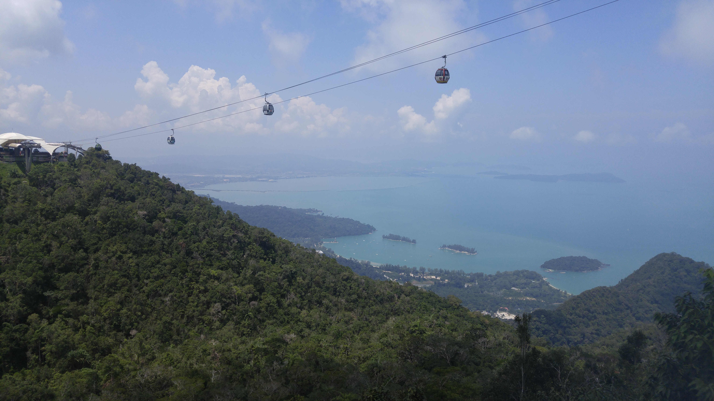

Go Back
Langkawi

Langkawi is a tropical island that is just northwest of peninsular Malaysia. It's a great holiday destination maybe overshadowed by the nearby Thai islands. The island offers different scenes for different travel styles from luxurious to budget and from single partiers to families. Flights to Langkawi cost as low as 20 dollars from Kuala Lumpur thanks to AirAsia's exceptionally cheap prices for domestic flights in Malaysia. The island has many fun attractions most of which involve the abundance of beautiful nature. Some of my favourite activities were taking the cable car up to the sky bridge, going to the beach and visiting Telaga Tujuh Waterfalls. Another cool thing about this island is that it's tax free so it's cheaper than the rest of Malaysia for a variety of goods including alcohol. The nightlife scene here can range from filled bars and clubs to tranquil beanbag chairs on the beach with shisha. Here are a few of my recommendations if you visit Langkawi.
The Langkawi Sky Bridge and the cable car ride that leads up to it is probably the most impressive human development on the island. It offers you amazing scenic views of the tropical jungle and ocean that surrounds the island. The cable car costs about 10 usd to go up and the sky bridge has a seperate fee which is only about 2 usd according to the information I found online (I visited back in 2017 so I don't remember the price off the top of my head). Once you get to the top of the cable car you can walk around the terminal and take in the views then make your way to the sky bridge for even more views and likely some monkeys wandering around. There are restaurants and vendors around the property so people can stop for a meal or drink and then head back down. At the bottom near the entrance of the cable car there are other attractions like a museum. This is a cool experience in Langkawi and is one of the most memorable cable cars and bridges I've been on.
There are plenty of nice beaches on the island. I stayed right by Cenang Beach so I enjoyed spending time there during the days and nights. During the day you can take a swim in the calm ocean to escape the extreme Southeast Asian heat. At night there are many cool nightlife spots many of which have beanbag chairs and offer shisha and drinks. It was a calm atmosphere much different than the one I experienced the night before in Kuala Lumpur. Aside from Cenang Beach there are plenty of other nice ones as well as island tours so for beach lovers there is no shortage of them here and they are very similar to the ones you'll get in Thailand but with far less tourism.
There are several waterfalls on the island but the one I enjoyed the most was The Telaga Tujuh Waterfalls. These ones were a little bit far from the Cenang Beach area but were very fun. You have to ascend quite a steep flight of steps before arriving at the large waterfall. Once at the top you have a very nice view back down the hill of the jungle. The rock formations at the top are also very smooth and back when I visited people would commonly just slide down the rock into the pool under the waterfalls. There are many other waterfalls that you can visit and that involve less hiking than this one. Some alternatives are the Durian Perangin Falls and Temurun Falls.